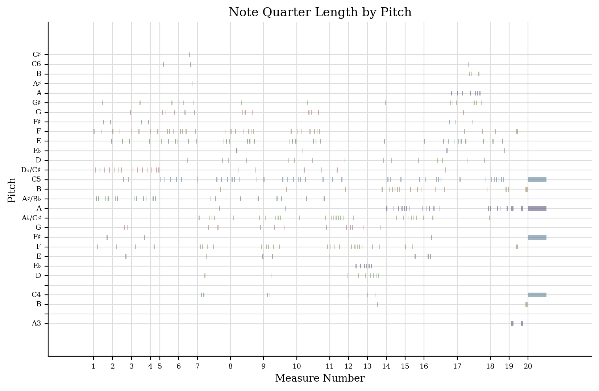
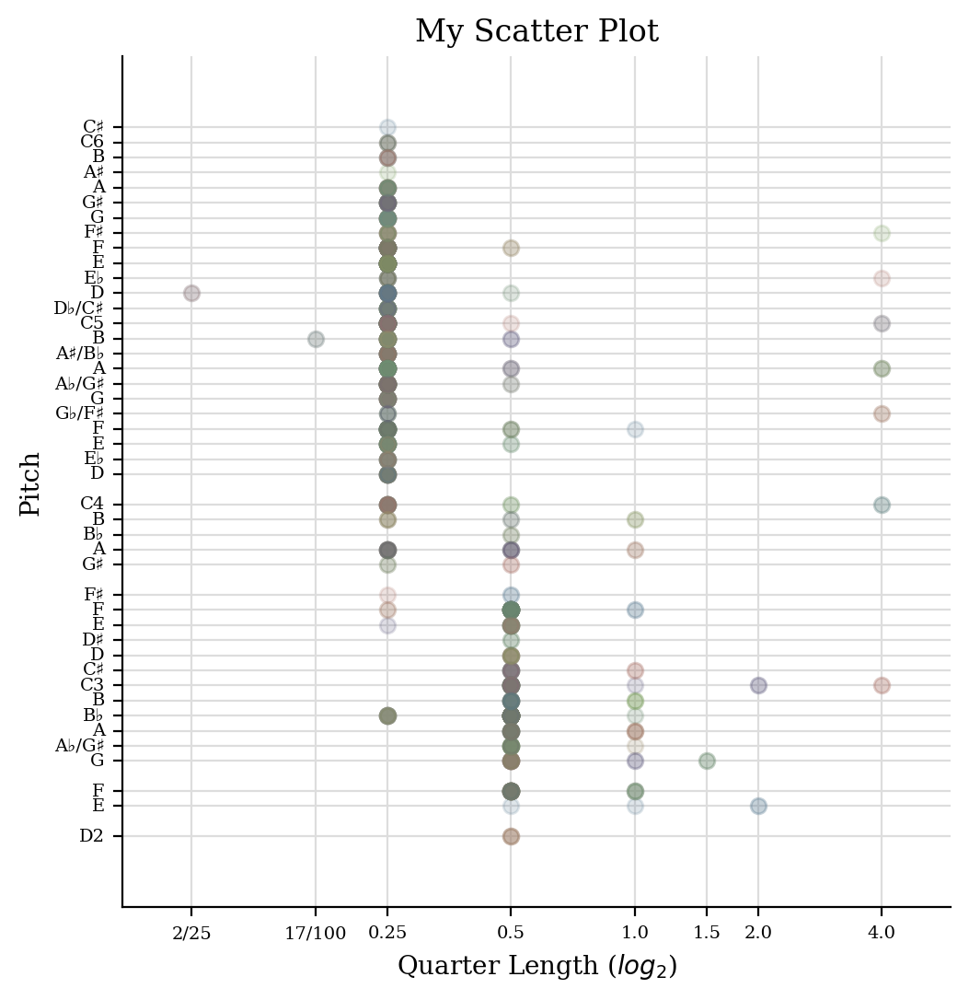
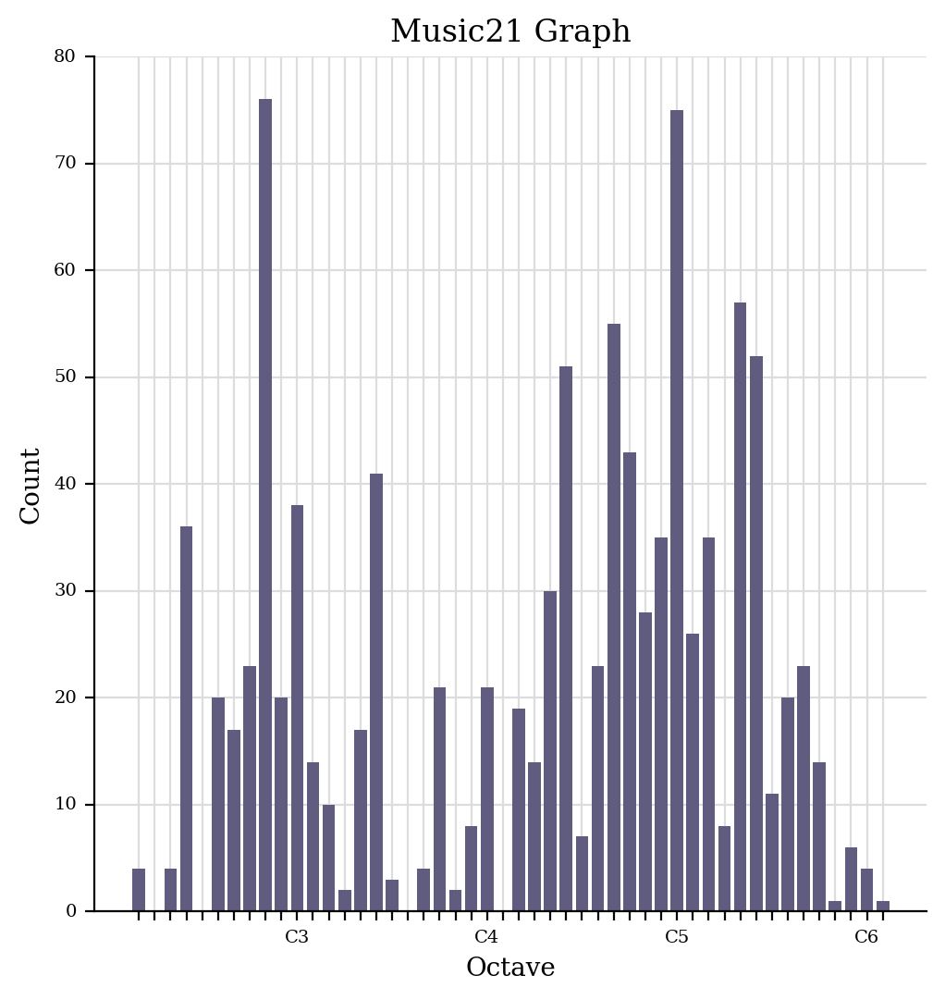

Computational Analytics of Notated Music
jSymbolic Analysis
Below are the results generated by jSymbolic for the MIDI file of my chosen piece.
| Amount_of_Arpeggiation | 0.3552 |
| Interval_Between_Most_Prevalent_Pitches | 4.0 |
| Mean_Pitch | 60.77 |
| Mean_Pitch_Class | 5.566 |
| Most_Common_Melodic_Interval | 2.0 |
| Most_Common_Pitch | 72.0 |
| Most_Common_Pitch_Class | 5.0 |
| Number_of_Pitches | 56.0 |
| Number_of_Pitch_Classes | 12.0 |
| Pitch_Variability | 15.14 |
| Range | 59.0 |
| Strong_Tonal_Centres | 3.0 |
You can download the entire raw CSV output file here.
music21 Analysis
Below are the piano roll, scatter plot, and histogram analytics generated by music21 of my chosen piece.


